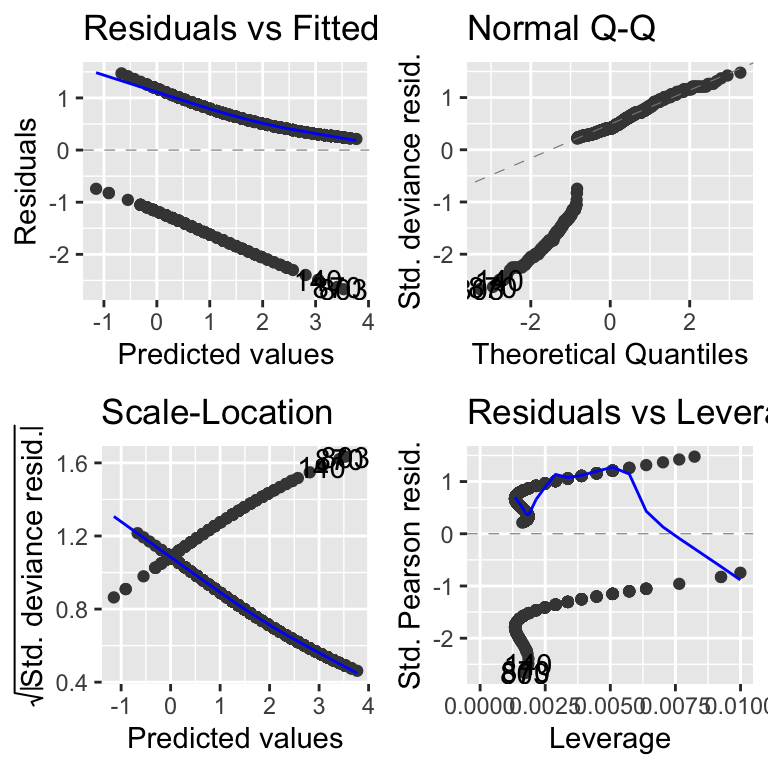
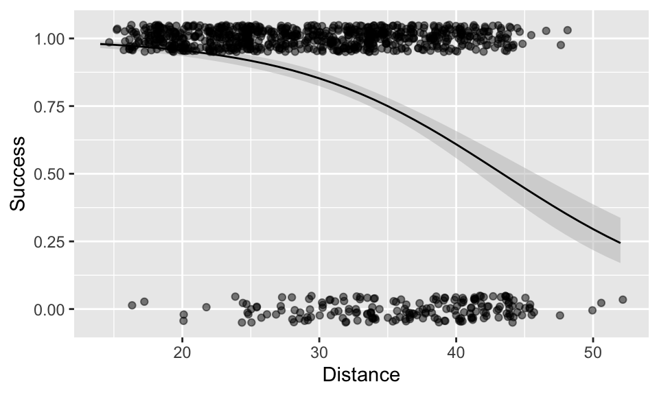
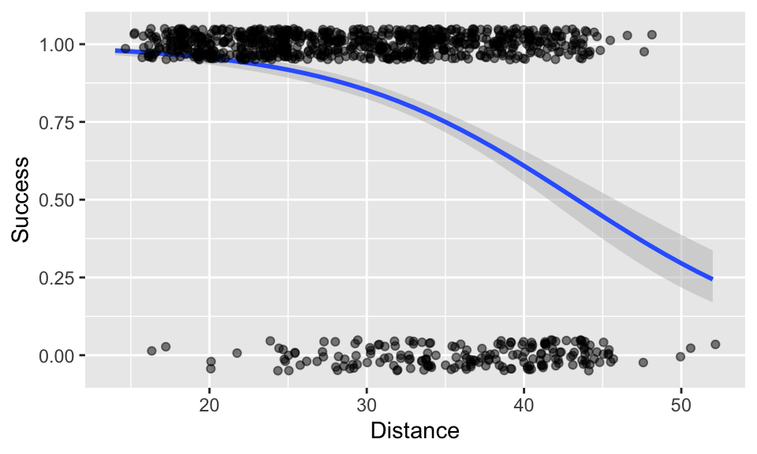

Chapter 17 Generalised linear models
The models we have covered so far are ordinary linear models (including ANOVA, ANCOVA, ordinary linear regression etc.) that assume thatthe relationship between the explanatory variables and the response variable is linear, and that the systematic error in the model is constant (homoscedastic, i.e. the standard deviation of the data does not depend on the magnitude of the explanatory variable).
In many cases this will not be the case. Non-linearity and heteroscedasticity tend to go hand-in-hand. Sometimes, for example, the data show an exponential growth type of pattern, and/or may be bounded in such a way that the errors cannot be homoscedastic. For example, counts of number of species on islands of different sizes have a lower bound at zero (you can’t have negative numbers of species!) and increase exponentially while the standard deviations are are small for small islands and large for large islands.; ratio data or percentage data such as proportion of individuals dying/surviving is bounded between 0 and 1 (0 - 100%).
Transformation of the response variable could an option to linearise these data (although there would be problems with 0 values (because log(0) = -Infinity)), but a second problem is that the ordinary linear model assumes “homoscedasticity” - that the errors in the model are evenly distributed along the explanatory variables. This assumption will be violated in most cases. For example, with count data (e.g. number of species in relation to island size), the errors for very small islands will be smaller than those for large islands. In fact, even if we transform the response variable, for example by log transformation, the predictions of the model will allow errors that include negative counts. This is clearly a problem!
Generalised linear models (GLMs) solve these problems by not only applying a transformation but also explicitly altering the error assumption. They do this using a link function to carry out the transformation and by choosing an error structure (sometimes referred to as family, or variance function). The choice of link and error structure can be a bit confusing, but there are so-called “canonical links” that are commonly associated with particular error structures. For example, a model for count data would usually have a log link and a Poisson error structure.
The flexibility of the GLM approach means that one can fit GLM versions of all of the models you have already learned about until this point: ANOVA-like GLMs, ANCOVA-like GLMs, ordinary regression-like GLMs and so on.
In this chapter I will focus on this count data and in the next chapter I will broaden the focus to illustrate uses of other data types.
17.1 Count data with Poisson errors.
The most common kind of count data where Poisson errors would be expected are frequencies of an event: we know how many times an event happened, but not how many times it did not happen (e.g. births, deaths, lightning strikes).
In these cases:
- Linear model could lead to negative counts.
- Variance of response likely to increase with mean (it usually does with count data).
- Errors are non-normal.
- Zeros difficult to deal with by transformation (e.g. log(0) = -Inf).
- Other error families do not allow zero values.
The standard (“canonical”) link used with the Poisson error family is the log link. The log link ensures that all fitted (i.e. predicted) values are positive, while the Poisson errors take account of the fact that the data are integer and the variance scales 1:1 with the mean (i.e. variance increases linearly and is equal to the mean). There are other potential link and error families that could be used with this kind of data, but we’ll stick with the standard ones here. Lets look at a couple of examples…
17.1.1 Example: Number of offspring in foxes.
This example uses the fox.csv data set. This data set gives the number of offspring produced by a group of foxes, alongside the weight (in kg) of the mothers. Let’s import and plot the data.
Remember to load the dplyr, magrittr and ggplot packages, and to set your working directory correctly.

The first thing to notice is that, like all count data, the data are formed into horizontal rows of data reflecting the fact that the response data are integer values. There is clearly an increasing pattern, but how can we formally test for a statistical relationship. It is obvious that fitting an ordinary linear model though this data would not be the right approach: this would lead to the prediction of negative number of offspring for small foxes, and also, the variance appears to increase with weight/number of offspring. Therefore this is a good candidate for a GLM. The data are bounded at 0, and are integer values, and for this reason the usual approach would be to fit a GLM with Poisson errors (and the standard log link).
mod1 <- glm(noffspring ~ weight, data = fox, family = poisson)After fitting the model it is a good idea to look at the model diagnostics, using autoplot from the ggfortify package.

Now we can ask for the Analysis of Variance table for this model. This is exactly the same procedure as for the previous linear models (ANOVA, ANCOVA etc.) except for GLMs one must also specify that you would like to see the results of significance tests using the test = "F" or test = "Chi". For Poisson and binomial GLMs the chi-squared test is most appropriate while for Gaussian (normal), quasibinomial and quasipoisson models the F test is most appropriate.
anova(mod1,test = "Chi")## Analysis of Deviance Table
##
## Model: poisson, link: log
##
## Response: noffspring
##
## Terms added sequentially (first to last)
##
##
## Df Deviance Resid. Df Resid. Dev Pr(>Chi)
## NULL 99 166.84
## weight 1 44.124 98 122.72 3.082e-11 ***
## ---
## Signif. codes: 0 '***' 0.001 '**' 0.01 '*' 0.05 '.' 0.1 ' ' 1This summary table tells us that the single explanatory variable (weight) is fantastically important (p-value is very small indeed).
We can then ask for the coefficient summary using summary.
summary(mod1)##
## Call:
## glm(formula = noffspring ~ weight, family = poisson, data = fox)
##
## Deviance Residuals:
## Min 1Q Median 3Q Max
## -2.3891 -0.9719 -0.1183 0.5897 2.3426
##
## Coefficients:
## Estimate Std. Error z value Pr(>|z|)
## (Intercept) -0.74981 0.31107 -2.410 0.0159 *
## weight 0.63239 0.09502 6.655 2.83e-11 ***
## ---
## Signif. codes: 0 '***' 0.001 '**' 0.01 '*' 0.05 '.' 0.1 ' ' 1
##
## (Dispersion parameter for poisson family taken to be 1)
##
## Null deviance: 166.85 on 99 degrees of freedom
## Residual deviance: 122.72 on 98 degrees of freedom
## AIC: 405.56
##
## Number of Fisher Scoring iterations: 5GLM model coefficients and predicted values, are expressed on the scale of the linear predictor (i.e. the transformed data scale). It is usually desirable to “backtransform” to the natural scale before plotting. See below.
The model coefficients and their standard errors are given on the scale of the linear predictor. They tell us that there is a significant association between the weight of the fox mother and the number of offspring she will produce: larger foxes produce more offspring. Because the coefficients are given on the scale of the linear predictor rather than on the real scale it is useful to plot predictions of the model to visualise the relationship.
To do that we must (1) tell the model what to predict from i.e. we must provide a suitable sequence of numbers to predict from using seq, (2) use the predict function to predict values (fit) from the model. We use the argument type = "response" to tell the function that we want the predictions on the back-transformed (real) scale rather than on the scale of the linear predictor. We add the argument se.fit = TRUE to tell the function to give us the standard error estimates of the fit. The se.fit values are added or subtracted from the fit to obtain the plus/minus standard errors. We can multiply these by 1.96 to get the 95% confidence intervals of the fitted values.
#Vector to predict from
newData <- data.frame(weight = seq(1.7,4.4,0.01))
#Predicted values (and SE)
predVals <- predict(mod1,newData,type="response",se.fit = TRUE)
#Create new data for the predicted fit line
newData <- newData %>%
mutate(noffspring = predVals$fit) %>%
mutate(ymin = predVals$fit - 1.96*predVals$se.fit) %>%
mutate(ymax = predVals$fit + 1.96*predVals$se.fit)Take a look at this data to make sure it looks OK.
head(newData)## weight noffspring ymin ymax
## 1 1.70 1.384392 0.9649333 1.803850
## 2 1.71 1.393174 0.9734837 1.812865
## 3 1.72 1.402013 0.9821017 1.821924
## 4 1.73 1.410907 0.9907879 1.831026
## 5 1.74 1.419858 0.9995426 1.840173
## 6 1.75 1.428865 1.0083663 1.849364This looks OK. Now we can plot the data and add a the model fit line, and a “ribbon” representing the errors (the 95% confidence interval for the line).

So we could summarise this something like this:
Methods: I modelled the association between mother’s weight and number of pups produced using a generalised linear model with a log link and Poisson error structure. This is appropriate because the data are count data (number of pups) that are bounded at 0 with increasing variance with increased maternal weight.
Results: The GLM showed that maternal weight was significantly associated with the number of pups produced (GLM: Null Deviance = 166.8, Residual Deviance = 122.7, d.f. = 1 and 98, p <0.001). The slope of the relationship was 0.63 (on the log scale). The equation of the best fit line was log(nOffspring) = -0.75 + 0.63\(\times\)MotherWeight (see Figure XXX)
17.1.2 Example: Cancer clusters
This data show counts of prostate cancer and distance from a nuclear processing plant. Lets take a look at the data.
Let’s first import the data and use summary to examine it by plotting it:
First we can see that there are no negative count values.
Again, you will notice that the data are formed into horizontal rows of integer response values. There are lots of zero values at all distances, but the biggest cluster (6 cases), is very close to the plant. But is there a relationship between the distance from the nuclear plant and the number of cancers?
Let’s fit a Generalised Linear Model to find out. As before will assume that the error is Poisson (that they variance increases directly in proportion to the mean), and we will use the standard log link to ensure that we don’t predict negative values:
mod1 <- glm(Cancers ~ Distance, data = cancer, family = poisson)Next, plot the diagnostic plots.
These look a bit dodgy, but we’ll stick with it for the moment.
Next ask for the Analysis of Variance table.
anova(mod1,test = "Chi")## Analysis of Deviance Table
##
## Model: poisson, link: log
##
## Response: Cancers
##
## Terms added sequentially (first to last)
##
##
## Df Deviance Resid. Df Resid. Dev Pr(>Chi)
## NULL 93 149.48
## Distance 1 2.8408 92 146.64 0.0919 .
## ---
## Signif. codes: 0 '***' 0.001 '**' 0.01 '*' 0.05 '.' 0.1 ' ' 1The ANOVA table tells us that there is no significant effect of the Distance variable. In other words a model that includes the Distance term does not explain significantly more variation than the NULL model that includes no terms and instead assumes that variation in cancer incidence is simply caused by random variation.
We needn’t go further with this model, but go ahead and plot the model in any case (just for practice).
summary(mod1)##
## Call:
## glm(formula = Cancers ~ Distance, family = poisson, data = cancer)
##
## Deviance Residuals:
## Min 1Q Median 3Q Max
## -1.5504 -1.3491 -1.1553 0.3877 3.1304
##
## Coefficients:
## Estimate Std. Error z value Pr(>|z|)
## (Intercept) 0.186865 0.188728 0.990 0.3221
## Distance -0.006138 0.003667 -1.674 0.0941 .
## ---
## Signif. codes: 0 '***' 0.001 '**' 0.01 '*' 0.05 '.' 0.1 ' ' 1
##
## (Dispersion parameter for poisson family taken to be 1)
##
## Null deviance: 149.48 on 93 degrees of freedom
## Residual deviance: 146.64 on 92 degrees of freedom
## AIC: 262.41
##
## Number of Fisher Scoring iterations: 5Use the approach from the fox example as guidance to make a plot with a fit line.
17.2 Exercise: Maze runner
In an experiment, researchers studied the ability of children and adults to navigate through a maze. They recorded the number of mistakes each person made before successfully completing the maze. The data (maze.csv) has two columns: Age (a categorical variable with two levels - Adult and Child) and nErrors a count of the number of errors that each subject makes.
In this example, you will be fitting a GLM equivalent of a t-test that is appropriate for count data.
- Import the data and graph it (
geom_boxplot). Try adding the points to theggplotusing the new (to you) functiongeom_dotplot(binaxis = "y", stackdir = "center").
Fit an appropriate GLM.
Examine the diagnostic plots of the model (
autoplot).Get the analysis of variance (deviance) table (
anova). What does this tell you?Obtain the
summarytable. What does this tell you?Use the coefficient information in the
summarytable to get the model predictions for average number of mistakes (plus/minus 95% Confidence interval). Remember that (i) the model summary is on the scale of the linear predictor, and (ii) the 95% CI can be calculated as 1.96 times the standard error. You can do these calculations “by hand”, or using thepredictfunction. Ask for help if you get stuck.